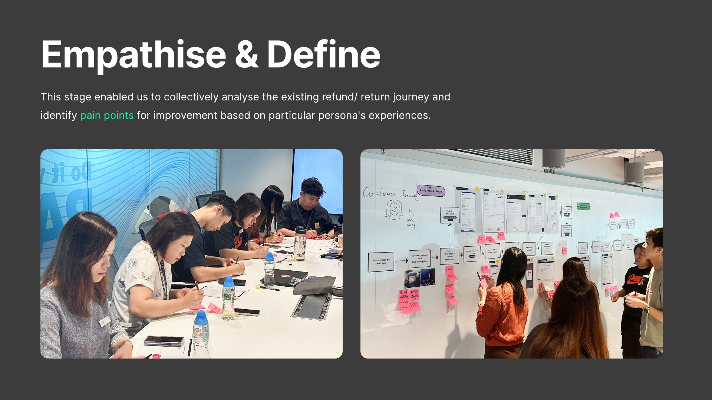
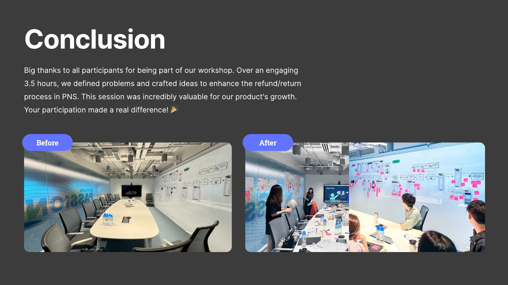
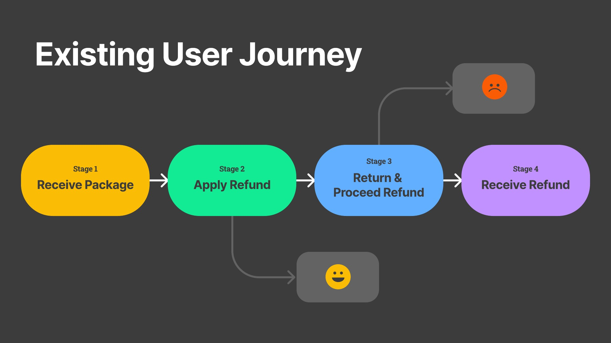
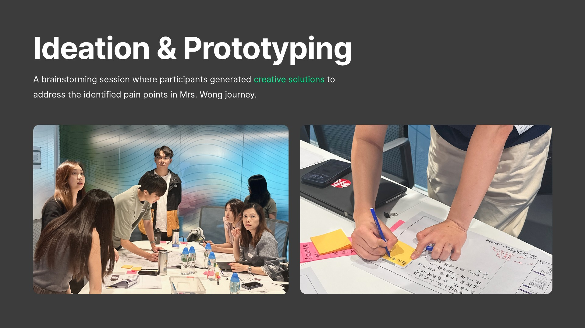
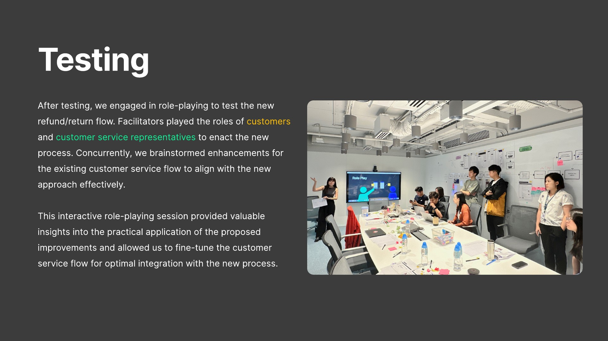
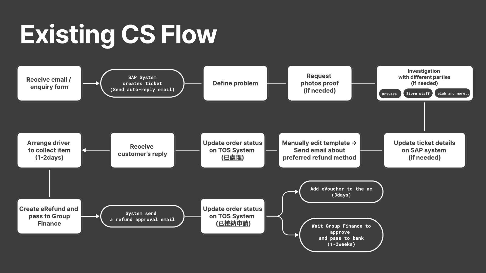
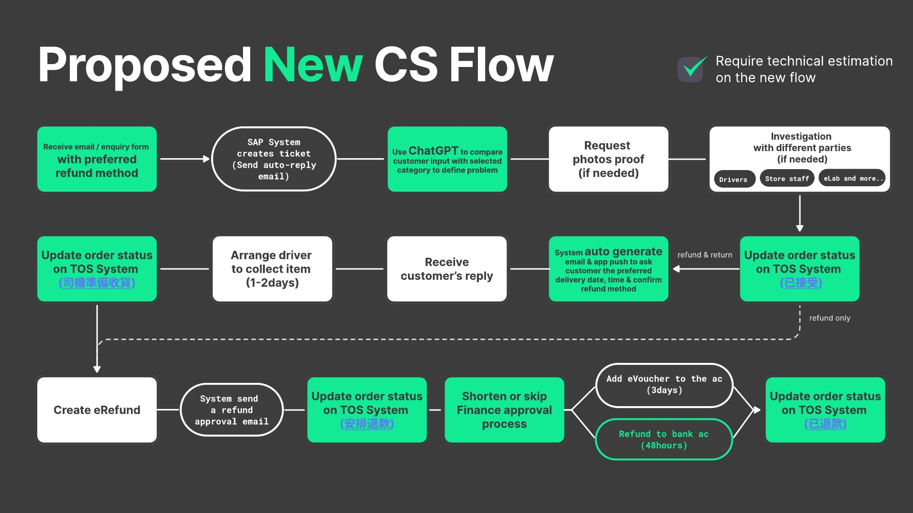
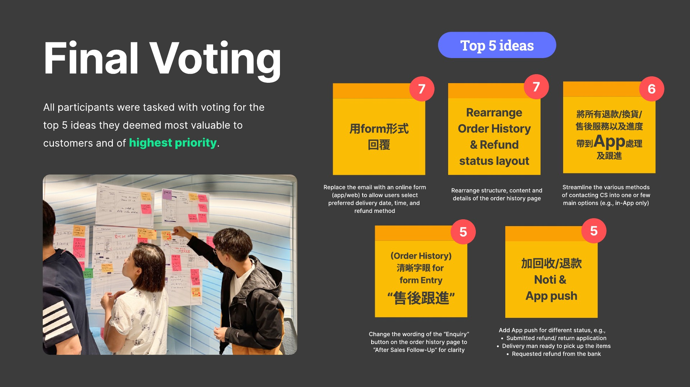

Refund Experience · Service Design Workshop
Aligning teams around a clearer refund experience.
I designed and facilitated a cross-functional workshop to map the refund journey, surface customer and operational friction, and turn the findings into a prioritised service roadmap.

Starting point
Refund feedback pointed to a service journey problem.
July customer feedback placed Return & Refund satisfaction at 61, below the Customer Service score of 71. The workshop was designed to understand the journey behind that gap and define practical directions toward a target score of 70.
- 61
- Return & Refund satisfaction
- 70
- Target satisfaction score
- 7%
- Share of feedback responses
Workshop design
One room, ten participants, one shared service problem.
I planned the end-to-end session for Marketing, Customer Service, UX, BA and technical app/web participants, then documented the decisions and rationale in the final report.
Structured from journey mapping through testing and priority voting.
Cross-functional perspectives from customer-facing and delivery teams.
Planning, facilitation, synthesis and report design.

Mapping the existing journey
The refund experience crossed four stages and several ownership boundaries.
Mapping the journey together made the handoffs visible: receiving a package, applying for a refund, returning the order and waiting for the refund to arrive.

-
01
Finding help
Refund entry points were difficult to find across scattered support channels, while the “Enquiry” label did not clearly describe after-sales support.
-
02
Understanding progress
Customers lacked a clear status, history and expected response time once the request moved into email-based handoffs.
-
03
Completing the return
Collection scheduling, refund-method uncertainty and limited proactive updates added friction after the request was submitted.
From friction to service ideas
The workshop turned pain points into a shared set of design directions.
Participants developed customer-facing, operational and cross-team ideas, then grouped them around the journey rather than treating each touchpoint in isolation.
- 25+
- UX ideas
- 9+
- Customer Service system ideas
- 6+
- Cross-team ideas

Testing the service flow
Role-play exposed the handoffs behind the interface.
Facilitators acted as customers and Customer Service representatives to test the proposed flow, revealing where digital interactions depended on collection, communication and internal processing.



Prioritising the roadmap
Voting converted a broad idea set into five shared priorities.
The final vote gave the team a practical decision output for sprint planning while keeping cross-team dependencies visible.
- 7
Replace email with an online form for preferred delivery timing and refund method.
- 7
Rearrange Order History and refund status information.
- 6
Streamline contact methods into one or a few clear channels.
- 5
Rename “Enquiry” to “After Sales Follow-Up”.
- 5
Add push notifications for key refund statuses.

Outcome & reflection
The workshop created a shared service model and a prioritised path forward.
The final report connected customer pain points, operational constraints and the proposed service flow into one decision record for sprint planning.
The value of the session was alignment: teams could see which improvements were ready to progress and which still depended on Delivery, Customer Service, Finance, banking or technical systems.